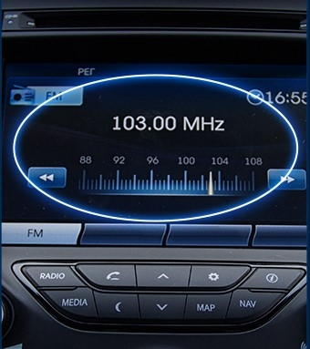
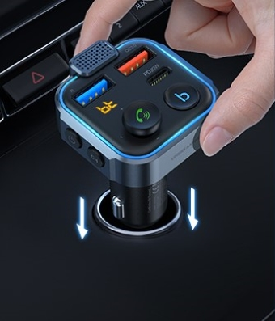
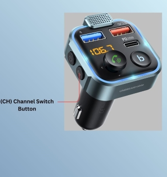
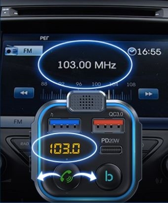

Setting-Up the FM Transmitter in Your Car
To begin using the device, you need to set it up to your car's radio station.
Setting up the device includes plugging the device into your car and channeling an unused radio frequency.
-
Note:Tune the car radio to an unused FM radio frequency.LED Display will automatically turn on when plugged in.

-
Plug in the device into your car's cigarette lighter or power port.

-
Locate and Press the CH Channel Button

-
Toggle the Multi-Function Button left/right to match the device's radio
frequency to the pre-selected frequency on your car radio.

The car radio is successfully connected to the device if there is no static or
interference.
Tip:
If there is still static
"noise", repeat the steps using a different unused frequency.